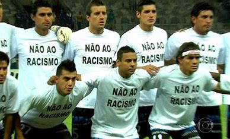

Brasil na Copa
Pentacampeã do mundo, a seleção brasileira tem um longo percurso na Copa do Mundo. A história do Mundial muitas vezes se confunde com a do Brasil, único time presente em todas as edições do torneio.
Grandes nomes da maior competição de futebol do mundo vestiram a amarelinha e brilharam no torneio. Pelé, Garrincha, Zagallo, Romário e Ronaldo são algumas das estrelas brasileiras que defenderam o país.

Futebol Brasileiro
Apesar de o Brasil não ser o berço do futebol, ele é conhecido no mundo todo como o país do futebol, isso acontece graças a História do Futebol no Brasil, que hora se confunde com a própria história da sociedade e até mesmo economia brasileira, mas você sabe porque isso acontece?
De origem inglesa, e mesmo assim sua origem ainda é duvidosa, o jogo da pelota chegou ao país em 1895. Charles Miller, que estudava na terra da Rainha, conheceu o futebol e quando retornou ao Brasil trouxe com ele um objeto que se tornaria um símbolo emblemático do país. Foi ele também quem trouxe as regras do jogo e que mostrou para seus amigos como o jogo funcionava.
Por isso, ele é conhecido como o pai do futebol brasileiro e teve participação efetiva no primeiro jogo realizado no país, que aconteceu na capital paulista em 14 de abril de 1895.

A história do futebol no Brasil
Os times que disputaram a primeira partida eram composta de um lado pela equipe formado por Charles Miller e por estrangeiros ingleses que viviam e trabalhavam no país. Os times ganharam o nome de Companhia de Gás e São Paulo Railway , sendo que a segunda equipe venceu o jogo por uma diferença de dois gols, um placar de 4 a 2.
Foi só então que a Associação Athletica do Mackenzie College fundou o primeiro clube brasileiro criado por e para brasileiros. No início eles chutavam bolas de basquete, no ano de 1898, a equipe vencia as vezes, mas nunca foi considerado uma boa equipe de futebol.
Isso fez com que no início, a história do futebol no Brasil fosse confundida com a história da elite paulista, já que apenas os homens dessa classe social conseguissem jogar as partidas. O que mais impressiona é que na época os negros eram proibidos de jogar e por isso, o futebol nasceu como um esporte exclusivo de brancos e ricos.
A Primeira Liga de futebol criada foi a Paulista, no ano de 1901, por isso foi também a pioneira na hora de organizar um campeonato, que ganhou o nome de Campeonato Paulista. O pai do futebol participou da competição e seu time foi tricampeão paulista, o que fez com que seus jogadores se tornassem verdadeiras sensações.
As primeiras equipes de futebol profissional começaram a se organizar 18 anos mais tarde e nessa época todos os estados já tinham participações, ainda que esporádicas na história do futebol no Brasil. Nesse ano já existiam clubes e federações e campeonatos regionais, assim como a Confederação Brasileira de Desportos, ou como era conhecida CDB, 5 anos antes e que era responsável por administrar diversas outras modalidades de esporte no país
.jpg)
As bolas e o futebol brasileiro
Como era de se esperar, as primeiras bolas brasileiras chegaram por meio de importações, principalmente da Inglaterra e também vindas de acordo com nobres rapazes que estavam estudando por lá. As pelotas alemãs também foram importadas, só que em menor quantidade. Elas possuíam cadarços que amarravam sua estrutura e uma câmara inflável, que era feita de borracha. Para evitar que se machucassem, no início, muitos jogadores usavam toucas que faziam com que a amarração da bola não cortassem ou incomodasse na hora de cabecear.
A primeira bola originalmente brasileira também nasceu em São Paulo, e era fabricada na Rua Ipiranga por um artesão de nome Caetano. Com isso, vários outros sapateiros começaram a produzir novas pelotas, fazendo com que as importações ficassem cada vez menores. A produção foi tanta que o Brasil passou de importador para exportador de bolas, que eram vendidas para os vizinhos Uruguai e Argentina.
Racismo no futebol
Dos 171 casos de discriminação racial no futebol brasileiro nos últimos três anos, entre 2019 e 2021, apenas 35, ou 20% do total, tiveram algum tipo de punição. Embora quatro deles estejam em andamento, a maioria das situações não resultou em sanções para clubes, torcedores ou dirigentes. Especialistas apontam que a descrença das vítimas no desfecho dos casos, falhas na legislação e a falta de negros na composição dos tribunais desportivos ajudam a explicar o quadro.
Os dados são do Observatório da Discriminação Racial, entidade que propõe ações afirmativas a partir de relatórios anuais sobre casos de discriminação no esporte desde 2014.
A partir das informações da entidade, dos 82 casos de injúria racial em 2019, 18 tiveram sanções. Em 2020, foram cinco em 36 ocorrências. Em 2021, a proporção subiu: de 53 situações, houve dez análises.
Segundo o próprio tribunal, 12 casos de injúria racial no futebol foram julgados nos últimos três anos. Destes, oito receberam punições variadas (multas e suspensões de atletas e dirigentes), dois tiveram absolvições (por descaracterização da acusação) e outros dois estão em andamento.
Os negros e a história do futebol no Brasil
O jogo chegou ao Brasil apenas seis anos depois da proclamação da república e sete anos depois da assinatura da Lei Áurea. Por isso, não era de se abismar que o futebol fosse apenas disputado por brancos, os negros só começaram a jogar de forma profissional em 1920, e muitos deles eram obrigados a entrarem em campo maquiados com pó de arroz, tudo na tentativa de “esbranquiçar” o jogador.
O primeiro time a dar de forma efetiva espaço para os negros em um esporte elitista foi o Vasco. Por isso, um dos fatos emblemáticos são que em 1923 um time carioca chamou muita a atenção, o campeonato foi por um clube formado apenas por negros.
Alguns anos depois os “Camisas Negras” mudaram o modo como o futebol era visto, o time de negros vencia de forma impressionante e com isso, os torcedores que começaram a se interessar pelo esporte vinham também das camadas mais pobres da sociedade. No entanto, isso provocou uma cisão no Campeonato Carioca e o Campeonato foi divido, tudo para que o futebol continuasse a ser um esporte de brancos elitistas.
Todas episódios retardaram a visão do futebol como um jogo popular, apesar de o início ter sido em 1933, apenas durante a Copa de 1950 que a seleção brasileira, que possuía jogadores negros reconhecidos internacionalmente, trouxe a todas as camadas a paixão pelo futebol.

O racismo no futebol brasileiro
O racismo sempre foi um tema presente na sociedade brasileira. Desde a época da escravidão, a população negra sofre de violência verbal e física, mesmo atualmente com leis e programas sociais visando coibir tais discriminações.
No futebol isso não se mostra diferente. Por mais que o esporte tenha como objetivo povos e culturas diferentes, ainda é reflexo da sociedade que está inserida.
A origem do futebol no Brasil foi marcada por ser praticado pelas pessoas que estavam na elite da sociedade. Os primeiros clubes só admitiam, em sua maioria, a presença de famílias tradicionais, muitas dessas de descendentes de europeus. Com isso, os participantes dos torneios não eram das classes populares.
O racismo sempre foi um tema presente na sociedade brasileira. Desde a época da escravidão, a população negra sofre de violência verbal e física, mesmo atualmente com leis e programas sociais visando coibir tais discriminações.
No futebol isso não se mostra diferente. Por mais que o esporte tenha como objetivo povos e culturas diferentes, ainda é reflexo da sociedade que está inserida.
A origem do futebol no Brasil foi marcada por ser praticado pelas pessoas que estavam na elite da sociedade. Os primeiros clubes só admitiam, em sua maioria, a presença de famílias tradicionais, muitas dessas de descendentes de europeus. Com isso, os participantes dos torneios não eram das classes populares.
Somente foi quebrado essa percepção a partir de 1923, com o advento do Vasco da Gama, clube de origem popular e que era formado por operários, negros e moradores da periferia. Após ser admitido na prática de torneios esportivos, em 1925, o futebol brasileiro começou, aos poucos, a abrir espaço para os negros.
Ao longo dos anos, com o grande sucesso do esporte no Brasil, o futebol foi marcado por grandes jogadores negros como Arthur Friedenreich, Domingos da Guia, Didi, Coutinho, Garrincha, Jairzinho, Djalma Santos, Cafú, Dida e não podendo ser esquecido o maior de todos os tempos, o Rei Pelé. Estes são alguns nomes conhecidos mundialmente pelo seu talento no futebol, mas que, por serem negros, sofrem – ou sofreram – preconceito durante suas vidas e carreiras.
© Stephany Antunes 1°Info_Turma A